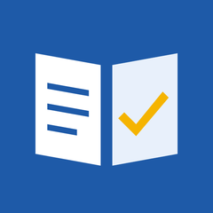
สมุดคะแนนนักเรียน
คู่มือวิธีใช้งานสำหรับผู้ดูแลระบบ ครู และผู้ปกครอง
สารบัญ
- แอปนี้ทำอะไร ใครใช้
- เริ่มต้น: เลือกวิธีใช้งาน
- เข้าสู่ระบบ (ในเครื่อง / ออนไลน์)
- เมนูหลักและแดชบอร์ด
- บันทึกข้อมูลพื้นฐานและนำเข้าจาก Excel
- บันทึกคะแนน
- รายงานและส่งออก Excel / PDF
- จัดการผู้ใช้ และเชิญผู้ปกครอง
- สำหรับผู้ปกครอง
- ตั้งค่า สำรองข้อมูล และความปลอดภัย
- คำถามที่พบบ่อย
1. แอปนี้ทำอะไร ใครใช้
สมุดคะแนนนักเรียนช่วยครูบันทึกคะแนนตามรายการประเมิน คำนวณคะแนนรวม เกรด และ GPA ให้อัตโนมัติ ออกรายงานรายวิชา รายห้อง และรายบุคคล พร้อมกราฟ และส่งออกเป็น Excel หรือ PDF ภาษาไทยได้
แอปนี้สำหรับ ครู ผู้ดูแลระบบของโรงเรียน และผู้ปกครอง (อายุ 18 ปีขึ้นไป) นักเรียนไม่มีบัญชีผู้ใช้ ข้อมูลของนักเรียนครูหรือโรงเรียนเป็นผู้บันทึก
| บทบาท | ทำอะไรได้ |
|---|
| ผู้ดูแลระบบ | จัดการข้อมูลทั้งหมด: ครู ห้องเรียน นักเรียน รายวิชา ผู้ใช้ เกณฑ์ตัดเกรด สำรอง/กู้คืน และดูรายงานทุกวิชา |
| ครู | บันทึกคะแนนและดูรายงานเฉพาะวิชาที่ตนสอน (ครูที่ปรึกษาดูผลของนักเรียนในห้องที่ปรึกษาได้) |
| ผู้ปกครอง | ดูผลการเรียนของบุตรหลานที่โรงเรียนผูกไว้เท่านั้น แก้ไขข้อมูลไม่ได้ |
โฆษณาแสดงเฉพาะในบัญชีครู ผู้ปกครองและผู้ดูแลระบบไม่เห็นโฆษณา
2. เริ่มต้น: เลือกวิธีใช้งาน
เปิดแอปครั้งแรกจะให้เลือกวิธีใช้งาน เปลี่ยนภายหลังได้จากเมนู สลับโรงเรียน/โหมด
ใช้ในเครื่อง (ส่วนตัว)
- เหมาะกับครูที่ต้องการสมุดคะแนนส่วนตัว ไม่ต้องใช้อินเทอร์เน็ต
- ข้อมูลอยู่ในมือถือเครื่องนี้ สำรองเป็นไฟล์เข้ารหัส หรือเก็บบน Google Drive ของตนเองได้ (หัวข้อ 10)
- สร้างบัญชีครู/ผู้ปกครองในเครื่องเดียวกันได้ เช่น ให้ผู้ปกครองมาดูผลที่เครื่องของครู
เชื่อมต่อโรงเรียน (ออนไลน์)
- ครูและผู้ปกครองทั้งโรงเรียนใช้ข้อมูลชุดเดียวกัน แต่ละคนใช้มือถือของตัวเอง เห็นเฉพาะข้อมูลตามสิทธิ์
- ข้อมูลเก็บในโปรเจกต์ Firebase ของโรงเรียนเอง (แพ็กเกจฟรี) ผู้ดูแลระบบต้องติดตั้งครั้งแรกตาม คู่มือติดตั้งโหมดออนไลน์สำหรับโรงเรียน
ปุ่ม วิธีใช้งาน (PDF) เปิดคู่มือฉบับนี้
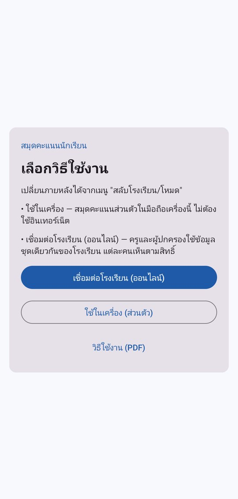
หน้าเลือกวิธีใช้งาน
3. เข้าสู่ระบบ
3.1 โหมดในเครื่อง
- ครั้งแรก แอปให้ สร้างบัญชีผู้ดูแลระบบ: ตั้งชื่อผู้ใช้ ชื่อที่แสดง และรหัสผ่านอย่างน้อย 8 ตัว
- ครั้งต่อไปเข้าด้วยชื่อผู้ใช้และรหัสผ่าน
- บัญชีที่ผู้ดูแลสร้างให้ (ครู/ผู้ปกครอง) ต้อง ตั้งรหัสผ่านของตนเอง ตอนเข้าครั้งแรก
- ใส่รหัสผิด 5 ครั้ง บัญชีจะถูกล็อก 5 นาที
- ปิดแอปหรือทิ้งไว้เบื้องหลังเกิน 15 นาที ระบบจะออกจากระบบให้เอง
- ลืมรหัสผ่าน: ให้ผู้ดูแลระบบตั้งรหัสใหม่ให้ที่เมนู จัดการผู้ใช้
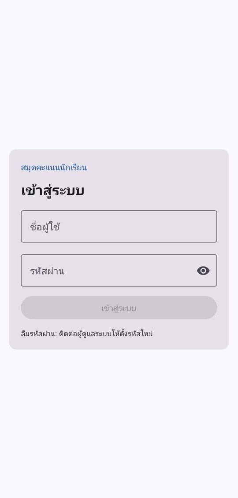
เข้าสู่ระบบ (ในเครื่อง)
3.2 โหมดออนไลน์
- ผู้ดูแลระบบส่ง คำเชิญ ถึงอีเมลของคุณ และแจก รหัสเชื่อมต่อ หรือ QR ของโรงเรียน (รหัสเชื่อมต่อไม่ใช่รหัสผ่าน)
- เลือก เชื่อมต่อโรงเรียน (ออนไลน์) แล้วกด สแกน QR รหัสเชื่อมต่อ หรือวางรหัสที่ขึ้นต้นด้วย
SSCHOOL1:
- ครั้งแรกกด ยังไม่มีบัญชี สมัคร ใส่อีเมลที่ได้รับเชิญและตั้งรหัสผ่าน แล้วเปิดอีเมลกดลิงก์ยืนยัน (ถ้าไม่พบให้ดูในจดหมายขยะ) กลับมากด ยืนยันแล้ว
- แอปแสดงคำเชิญ ตรวจชื่อ บทบาท และกด ยอมรับคำเชิญ
- ถ้าโรงเรียนเปิดไว้ จะมีปุ่ม เข้าสู่ระบบด้วยบัญชี Google ใช้แทนการตั้งรหัสผ่านได้
- ลืมรหัสผ่าน: ใส่อีเมลแล้วกด ลืมรหัสผ่าน ระบบส่งลิงก์ตั้งรหัสใหม่ทางอีเมล
- ขึ้นว่า "ยังไม่ได้รับเชิญ": อีเมลที่ใช้ไม่ตรงกับที่โรงเรียนเชิญ ติดต่อผู้ดูแลระบบ
- อินเทอร์เน็ตหลุด: ยังดูข้อมูลที่เคยโหลดและบันทึกคะแนนได้ แอปส่งขึ้นเองเมื่อกลับมาออนไลน์
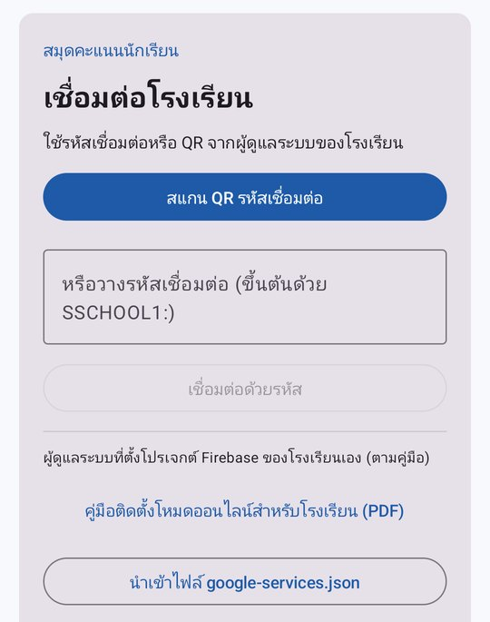
เชื่อมต่อโรงเรียน
4. เมนูหลักและแดชบอร์ด
แตะ ☰ มุมซ้ายบนเพื่อเปิดเมนู เมนูที่เห็นขึ้นกับบทบาท
| เมนู | ผู้ดูแล | ครู | ผู้ปกครอง |
|---|
| แดชบอร์ด | ✓ | ✓ | |
| บันทึกข้อมูล | ✓ | | |
| บันทึกคะแนน | ✓ | ✓ | |
| รายงาน | ✓ | ✓ | |
| ค้นหาข้อมูล | ✓ | ✓ | |
| จัดการผู้ใช้ / สมาชิกและคำเชิญ | ✓ | | |
| ผลการเรียนบุตรหลาน | | | ✓ |
| ตั้งค่า | ✓ | ✓ | ✓ |
| วิธีใช้งาน (PDF) | ✓ | ✓ | ✓ |
ค้นหาข้อมูล (แว่นขยายมุมขวาบน) พิมพ์รหัสหรือชื่อนักเรียน ครู วิชา หรือห้อง แล้วแตะผลลัพธ์เพื่อเปิดดู
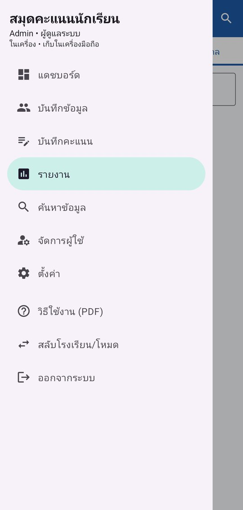
เมนูของผู้ดูแลระบบ
แดชบอร์ด
สรุปจำนวนนักเรียน ครู ห้องเรียน รายวิชา คะแนนที่บันทึก คะแนนรวมเฉลี่ย กราฟจำนวนผลการเรียนแต่ละเกรด คะแนนเฉลี่ยรายวิชา และนักเรียนคะแนนสูงสุด 5 อันดับ ครูเห็นเฉพาะวิชาที่ตนสอน
ยังไม่มีข้อมูลและอยากลองใช้ก่อน: ผู้ดูแลระบบไปที่ ตั้งค่า → สร้างข้อมูลตัวอย่าง (ครู 2 คน ห้อง 1 ห้อง นักเรียน 8 คน 3 วิชาพร้อมคะแนน)
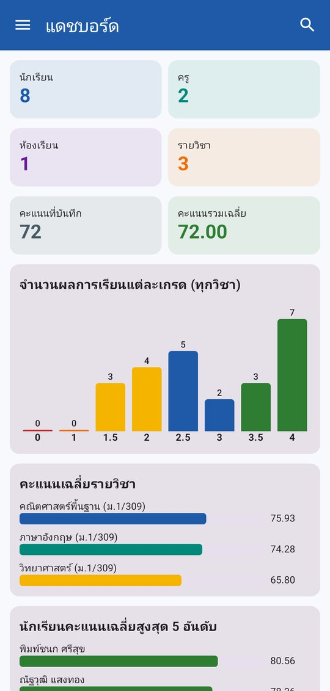
แดชบอร์ด
5. บันทึกข้อมูลพื้นฐาน (ผู้ดูแลระบบ)
เมนู บันทึกข้อมูล มี 4 แท็บ แนะนำให้บันทึกตามลำดับนี้
- ครู — รหัสครู ชื่อ-นามสกุล โทรศัพท์ กลุ่มสาระ/หมายเหตุ
- ห้องเรียน — ชื่อห้อง (เช่น ม.1/1) ระดับชั้น ปีการศึกษา (พ.ศ.) และครูที่ปรึกษา
- นักเรียน — รหัสนักเรียน ชื่อ นามสกุล ห้อง ชื่อ/โทรศัพท์/อีเมลผู้ปกครอง
- รายวิชา — รหัสวิชา ชื่อวิชา หน่วยกิต ภาคเรียน (1, 2, ฤดูร้อน) ปีการศึกษา ครูผู้สอน และห้องเรียนที่สอน
กดปุ่ม + เพื่อเพิ่ม แตะรายการเพื่อแก้ไข ปุ่มถังขยะเพื่อลบ ปุ่ม ผลการเรียน ข้างชื่อนักเรียนเปิดใบรายงานรายบุคคล
นำเข้ารายชื่อนักเรียนจาก Excel / CSV
- ในแท็บนักเรียน กด แบบฟอร์ม เพื่อบันทึกไฟล์ Excel ตัวอย่าง (ลบแถวตัวอย่างก่อนใส่ข้อมูลจริง)
- คอลัมน์ที่รู้จัก: รหัสนักเรียน, ชื่อ, นามสกุล (หรือ ชื่อ-นามสกุล ช่องเดียว), ห้อง, ชื่อผู้ปกครอง, โทรศัพท์ผู้ปกครอง, อีเมลผู้ปกครอง
- กด นำเข้า Excel/CSV เลือกไฟล์ แอปแสดงจำนวนที่เพิ่มใหม่/แก้ไข และห้องที่ยังไม่มี (เลือกให้สร้างห้องให้ได้)
นำเข้าซ้ำได้ นักเรียนจับคู่ด้วยรหัส คอลัมน์ที่ไม่มีในไฟล์จะคงค่าเดิมไว้ ไฟล์ CSV จาก Excel ภาษาไทยอ่านได้ทั้ง UTF-8 และแบบ Windows
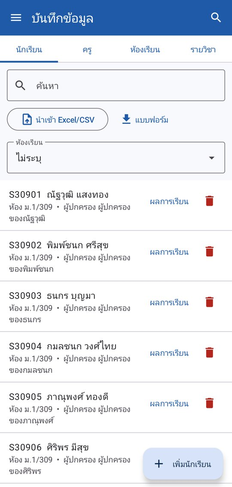
บันทึกข้อมูล แท็บนักเรียน
6. บันทึกคะแนน
- เมนู บันทึกคะแนน เลือกรายวิชา (ครูเห็นเฉพาะวิชาที่สอน)
- กำหนด รายการประเมินและสัดส่วนคะแนน กด + เพิ่มรายการ ใส่ชื่อ ประเภท (คะแนนเก็บ การบ้าน ชิ้นงาน/โครงงาน การมีส่วนร่วม คุณลักษณะ สอบกลางภาค สอบปลายภาค) คะแนนเต็ม และน้ำหนัก (%) เช่น เก็บ 30% กลางภาค 30% ปลายภาค 40% — น้ำหนักรวมควรเป็น 100%
- แตะชื่อรายการประเมินเพื่อกรอกคะแนนของนักเรียนทั้งห้องในหน้าเดียว
- กด บันทึก (ตัวเลขในวงเล็บคือจำนวนช่องที่แก้ยังไม่ได้บันทึก)
- คะแนนต้องอยู่ระหว่าง 0 ถึงคะแนนเต็ม ช่องที่ผิดจะขึ้นสีแดงและบันทึกไม่ได้
- แก้คะแนนที่บันทึกไว้แล้ว ต้องใส่ เหตุผลการแก้ไข ระบบเก็บประวัติว่าใครแก้ เมื่อไร จากเท่าไรเป็นเท่าไร (ดูได้ที่ ตั้งค่า → ประวัติการแก้ไขคะแนน)
- ปุ่มดินสอแก้รายการประเมิน ปุ่มถังขยะลบรายการ (คะแนนของรายการนั้นจะถูกลบด้วย)
คะแนนรวม = ผลรวมของ (คะแนนที่ได้ ÷ คะแนนเต็ม × น้ำหนัก) ของทุกรายการ แล้วตัดเกรดตามเกณฑ์ในหน้าตั้งค่า
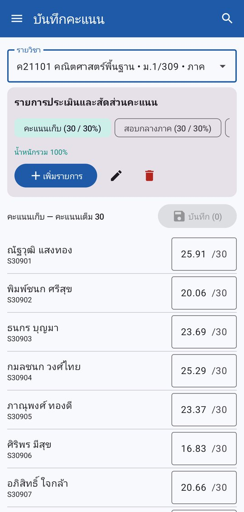
กรอกคะแนนทั้งห้อง
7. รายงานและส่งออก Excel / PDF
เมนู รายงาน มี 3 แท็บ ทุกหน้ามีปุ่ม Excel และ PDF เลือกที่บันทึกไฟล์ได้ (เช่น ในเครื่องหรือ Google Drive) แล้วส่งต่อทาง LINE หรืออีเมลได้
- รายวิชา — ค่าเฉลี่ย สูงสุด ต่ำสุด SD กราฟจำนวนแต่ละเกรด และตารางคะแนนทุกรายการของนักเรียนทั้งห้อง
- รายห้อง — จำนวนนักเรียน จำนวนวิชา GPA เฉลี่ยของห้อง กราฟ GPA รายบุคคล และตารางคะแนน/เกรดทุกวิชา
- รายบุคคล — ค้นหานักเรียนแล้วเปิดใบรายงานผล: GPA คะแนนรวมเฉลี่ย กราฟคะแนนแต่ละวิชา และรายละเอียดคะแนนทุกรายการ
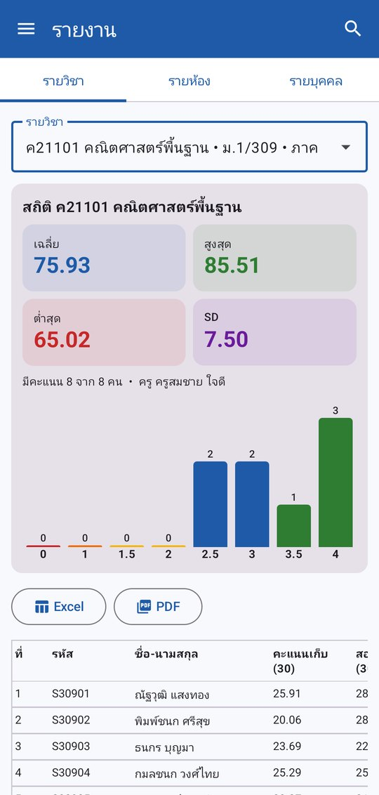
รายงานรายวิชา
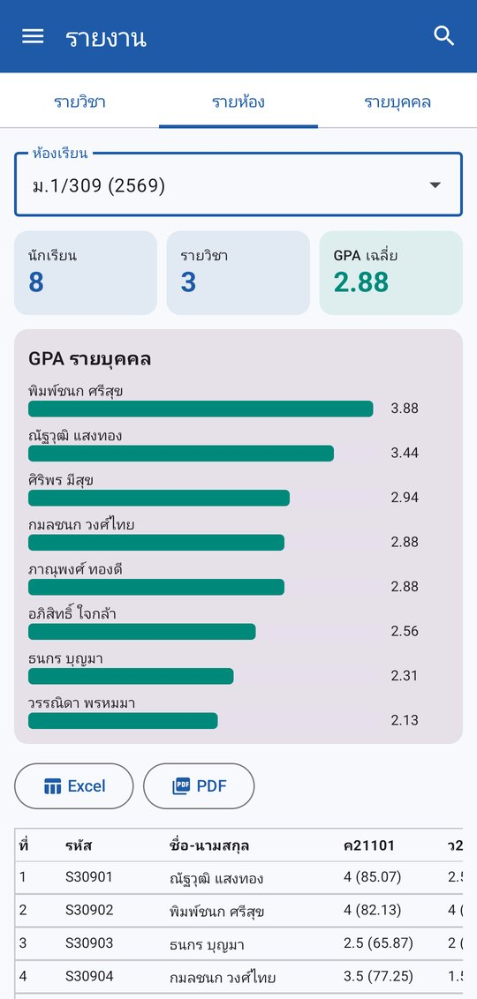
รายงานรายห้อง
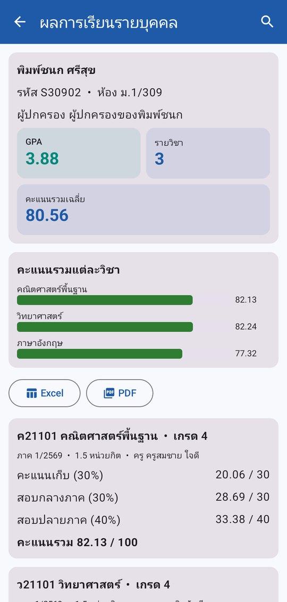
ผลการเรียนรายบุคคล
8. จัดการผู้ใช้ และเชิญผู้ปกครอง (ผู้ดูแลระบบ)
8.1 โหมดในเครื่อง: เมนู "จัดการผู้ใช้"
- กด + เพิ่มผู้ใช้
- เลือกบทบาท: ครู ให้เลือกครูที่ผูกกับบัญชี / ผู้ปกครอง ให้กด เลือกนักเรียนในความปกครอง (เลือกได้หลายคน)
- ตั้งชื่อผู้ใช้ ชื่อที่แสดง และรหัสผ่านเริ่มต้น แล้วบอกรหัสนี้กับเจ้าของบัญชี ผู้ใช้ต้องเปลี่ยนรหัสเองตอนเข้าครั้งแรก
- แตะบัญชีเพื่อแก้ไข ตั้งรหัสใหม่ หรือปิดใช้งาน (ปิดสวิตช์ ใช้งานได้)
- ต้องมีผู้ดูแลระบบที่ใช้งานได้อย่างน้อย 1 บัญชีเสมอ
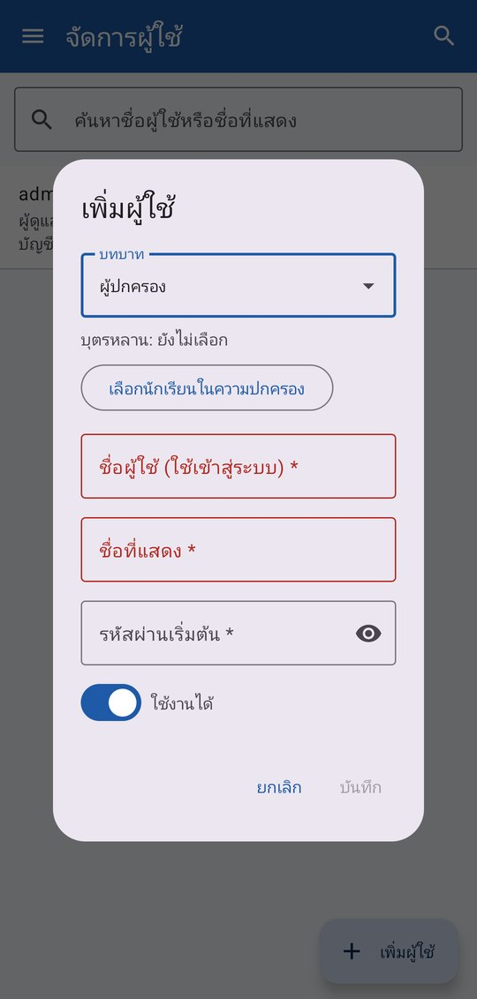
เพิ่มบัญชีผู้ปกครอง
8.2 โหมดออนไลน์: เมนู "สมาชิกและคำเชิญ"
- กด เชิญผู้ใช้ ใส่อีเมล ชื่อ บทบาท และครูที่ผูก/บุตรหลาน ผู้ได้รับเชิญสมัครด้วยอีเมลนั้นแล้วกดยอมรับคำเชิญ (หัวข้อ 3.2)
- เชิญผู้ปกครองทั้งห้อง เลือกห้อง แอปสร้างคำเชิญจาก อีเมลผู้ปกครอง ในข้อมูลนักเรียน (นำเข้าจาก Excel ได้) ผู้ปกครองที่มีลูกหลายคนในห้องจะได้คำเชิญเดียวที่ผูกลูกทุกคน นักเรียนที่ไม่มีอีเมลผู้ปกครองจะถูกข้าม
- แจกรหัสเชื่อมต่อหรือ QR ของโรงเรียนจาก ตั้งค่า → การ์ด โรงเรียน (ออนไลน์) ปุ่ม คัดลอก / แชร์
- แท็บ คำเชิญที่รอรับ แสดงคำเชิญที่ยังไม่มีใครรับ แก้ไขหรือยกเลิกได้
ผู้ใช้ของแอปคือครูและผู้ปกครอง แอปไม่สร้างบัญชีให้นักเรียน
9. สำหรับผู้ปกครอง
- เข้าสู่ระบบด้วยบัญชีที่โรงเรียนให้ (โหมดในเครื่อง) หรือสมัครด้วยอีเมลที่ได้รับเชิญ (โหมดออนไลน์ หัวข้อ 3.2)
- หน้า ผลการเรียนบุตรหลาน แสดงรายชื่อบุตรหลานที่โรงเรียนผูกไว้ แตะชื่อเพื่อดูผลการเรียน
- ใบรายงานผลแสดง GPA คะแนนรวมแต่ละวิชา เกรด และคะแนนทุกรายการประเมิน บันทึกเป็น Excel หรือ PDF ได้
- ผู้ปกครองเห็นเฉพาะบุตรหลานของตนเอง ดูของนักเรียนคนอื่นไม่ได้ และแก้ไขคะแนนไม่ได้
- ชื่อบุตรหลานไม่ครบหรือไม่ถูกต้อง ติดต่อครูหรือผู้ดูแลระบบของโรงเรียน
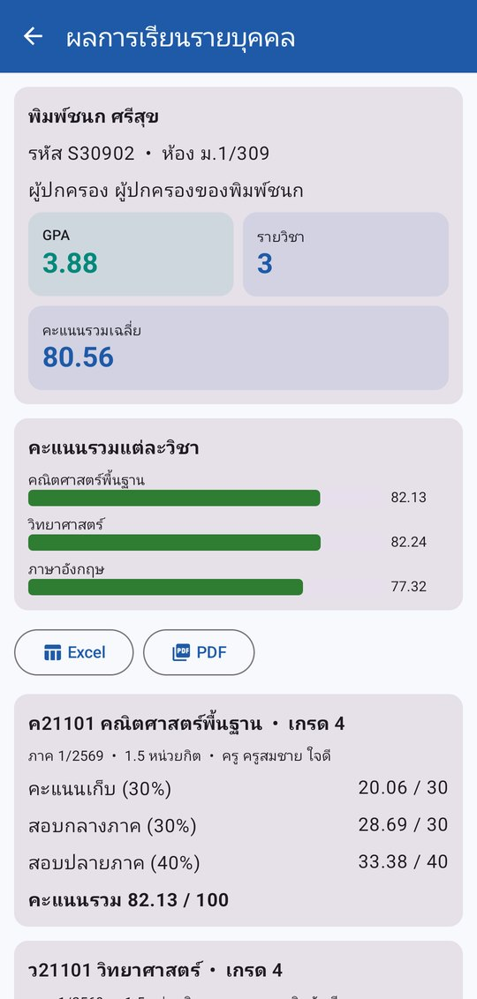
ผลการเรียนของบุตรหลาน
10. ตั้งค่า สำรองข้อมูล และความปลอดภัย
| หัวข้อ | ใช้ทำอะไร |
|---|
| บัญชีผู้ใช้ | เปลี่ยนรหัสผ่าน ออกจากระบบ ลบบัญชีของฉัน |
| ที่เก็บฐานข้อมูล (ในเครื่อง) | เก็บในเครื่องมือถือ หรือ ใช้ Google Drive เก็บเป็นไฟล์เข้ารหัสใน Drive ของคุณ ใช้หลายเครื่องร่วมกันได้ แอปซิงก์ให้เองเมื่อเปิดแอปและหลังบันทึก |
| รหัสไฟล์ข้อมูล | ต้องตั้งก่อนสำรองข้อมูลหรือใช้ Google Drive ไฟล์จะเข้ารหัส AES-256 ด้วยรหัสนี้ เปิดได้เฉพาะแอปนี้ที่รู้รหัส |
| สำรอง / กู้คืนข้อมูล | สำรองเป็นไฟล์ .ssdb เก็บไว้ที่ใดก็ได้ กู้คืนจากไฟล์ได้ (ต้องใช้รหัสไฟล์ข้อมูลตอนที่สำรอง) |
| เกณฑ์การตัดเกรด | กำหนดคะแนนต่ำสุดของแต่ละเกรด (จากคะแนนรวม 100) เพิ่ม/ลบขั้นได้ ปุ่ม ค่าตั้งต้น คืนเกณฑ์ 80 = 4, 75 = 3.5, 70 = 3, 65 = 2.5, 60 = 2, 55 = 1.5, 50 = 1, ต่ำกว่า 50 = 0 |
| ปีการศึกษา (เก็บถาวร/ลบ) | ส่งออกผลการเรียนทั้งปีเป็น Excel (ชีตสรุป + ชีตละรายวิชา) แล้วจึงลบปีนั้นออกเพื่อลดขนาดข้อมูลได้ |
| ประวัติการแก้ไขคะแนน | ดูว่าใครแก้คะแนนอะไร เมื่อไร และเหตุผล |
| ข้อมูลตัวอย่าง | สร้างข้อมูลทดลองใช้ (ผู้ดูแลระบบ) |
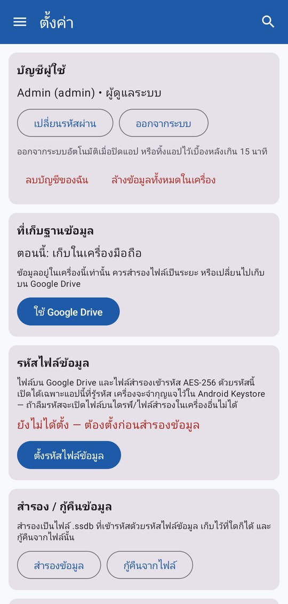
ตั้งค่า
ลืมรหัสไฟล์ข้อมูล จะเปิดไฟล์สำรองและไฟล์บน Google Drive จากเครื่องอื่นไม่ได้ ไม่มีใครกู้ให้ได้ ควรจดเก็บไว้ในที่ปลอดภัย เครื่องเดิมยังใช้งานต่อได้เพราะจำกุญแจไว้
ลบบัญชีและล้างข้อมูล
- ลบบัญชีของฉัน ลบบัญชีเข้าสู่ระบบของคุณ คะแนนและผลการเรียนที่โรงเรียนบันทึกยังอยู่ (เป็นข้อมูลของโรงเรียน) ผู้ดูแลระบบคนสุดท้ายลบตัวเองไม่ได้
- ล้างข้อมูลทั้งหมดในเครื่อง ลบทุกอย่างของแอปในเครื่องนี้ ไม่ลบข้อมูลบน Google Drive หรือบน Firebase ของโรงเรียน
- ขอลบบัญชีโดยไม่ต้องเปิดแอป: suchat-kl.github.io/studentscore/delete-account.html
11. คำถามที่พบบ่อย
ใช้ทั้งในเครื่องและออนไลน์พร้อมกันได้ไหม
ได้ สลับได้จากเมนู สลับโรงเรียน/โหมด ข้อมูลสองแบบแยกจากกัน เชื่อมต่อได้หลายโรงเรียนในเครื่องเดียว
เปลี่ยนมือถือเครื่องใหม่
ในเครื่อง: สำรองข้อมูลเป็นไฟล์ .ssdb แล้วกู้คืนที่เครื่องใหม่ หรือใช้ Google Drive บัญชีเดิมแล้วใส่รหัสไฟล์ข้อมูล ออนไลน์: ติดตั้งแอป เชื่อมต่อโรงเรียนด้วยรหัสเดิม และเข้าสู่ระบบด้วยอีเมลเดิม ข้อมูลอยู่ที่ server ของโรงเรียน
ขึ้นว่า "โรงเรียนยังไม่ได้ติดตั้งกติกาสิทธิ์" หรือ "เปิดให้ทุกคนอ่าน/เขียนได้"
ผู้ดูแลระบบของโรงเรียนต้องวางไฟล์กติกาสิทธิ์ใน Firebase ตาม คู่มือติดตั้งโหมดออนไลน์ ขั้นที่ 5 ปุ่ม ส่งไฟล์กติกาสิทธิ์ไปที่คอมพิวเตอร์ ในแอปช่วยส่งไฟล์ไปเปิดบนคอมพิวเตอร์
ไม่ได้รับอีเมลยืนยันหรืออีเมลตั้งรหัสผ่านใหม่
ดูในโฟลเดอร์จดหมายขยะ/โปรโมชัน แล้วกด ส่งอีเมลยืนยันอีกครั้ง ตรวจว่าพิมพ์อีเมลถูก
ข้อความ "ใช้โควตาฟรีของวันนี้ครบแล้ว"
แพ็กเกจฟรีของ Firebase จำกัดจำนวนการอ่าน/เขียนต่อวัน ข้อมูลที่บันทึกจะส่งขึ้นเองหลังโควตารีเซ็ต (ประมาณ 15:00 น. เวลาไทย) ผู้ดูแลระบบตรวจพื้นที่ที่ใช้ได้ที่ ตั้งค่า → พื้นที่ข้อมูลออนไลน์ (เก็บได้ 1 GB ต่อโรงเรียน ใกล้เต็มให้ส่งออกปีการศึกษาเก่าแล้วลบ)
คะแนนรวมหรือเกรดไม่ตรงกับที่คิด
ตรวจน้ำหนักของรายการประเมินให้รวม 100% และตรวจเกณฑ์การตัดเกรดที่หน้าตั้งค่า
ติดต่อผู้พัฒนา
อีเมล suchat.msit04@gmail.com • นโยบายความเป็นส่วนตัว suchat-kl.github.io/studentscore/privacy-policy.html